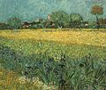
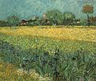
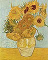
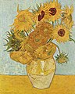
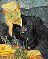
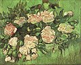
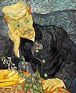
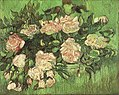

| Описание |
«Желтый цвет — высшая просветленность любви. Солнце и свет, по счастью, можно выразить при помощи желтого, бледного желто-зеленого, лимонного и золотого. Как прекрасен желтый цвет!» |
«В „Ночном кафе“ я попытался изобразить место, где человек губит самого себя, сходит с ума или становится преступником. Я хотел выразить пагубную страсть, движущую людьми, с помощью красного и зеленого цвета». |
Этот цвет был изобретен венецианским живописцем XVI века и позднее назван в его честь — «зеленый Паоло Веронезе». Добиться этого оттенка довольно-таки сложно. Кроме того, художникам долгое время приходилось воссоздавать «зеленый Веронезе» смешением других цветов, поскольку он был запрещен из-за высокой токсичности. |
«Изображая ночь, я совершенно не использовал черный цвет, только великолепный синий, фиолетовый и зеленый, а также зеленовато-желтый и лимонный — чтобы написать залитое светом кафе». |
Наукой доказано, что люди научились различать синий цвет гораздо позднее, чем все остальные оттенки. А воспроизводить его на холсте и вовсе начали совсем недавно — после того, как смогли добывать нужные пигменты. Синий цвет чаще всего ассоциировался с неким божественным началом, небесной безмятежностью мира иного. |


 

 

 


